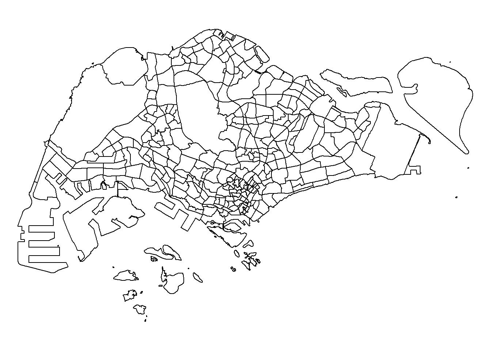
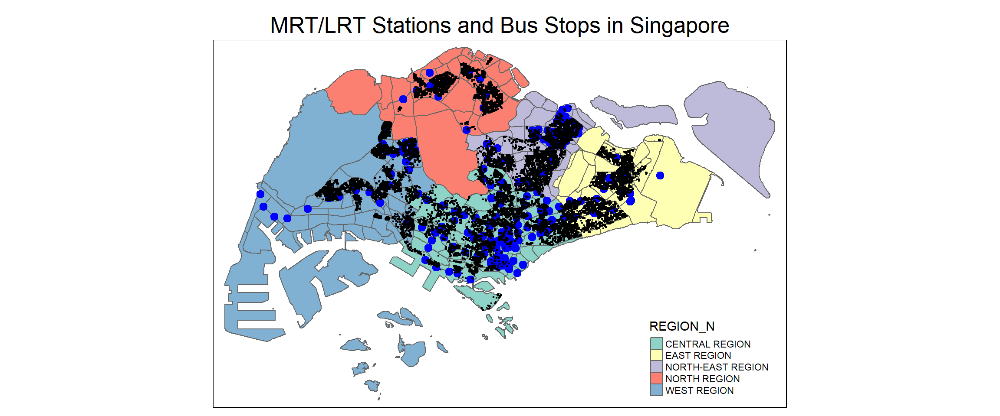

pacman::p_load(sf, raster, spatstat, tmap, tidyverse, RColorBrewer, spdep, sfdep, ggplot2, jsonlite)mrt_sf <- st_read(dsn = "data/mrt_stations", layer = "mrt_stations")Reading layer `mrt_stations' from data source
`C:\Users\blzll\OneDrive\Desktop\Y3S1\IS415\Quarto\IS415\Take-home_ex\Take-home_ex03\data\mrt_stations'
using driver `ESRI Shapefile'
Simple feature collection with 203 features and 16 fields
Geometry type: POINT
Dimension: XY
Bounding box: xmin: 6150.863 ymin: 27545.85 xmax: 45201.32 ymax: 47854.2
Projected CRS: SVY21st_crs(mrt_sf)Coordinate Reference System:
User input: SVY21
wkt:
PROJCRS["SVY21",
BASEGEOGCRS["GCS_SVY21_WGS84",
DATUM["World Geodetic System 1984",
ELLIPSOID["WGS 84",6378137,298.257223563,
LENGTHUNIT["metre",1]],
ID["EPSG",6326]],
PRIMEM["Greenwich",0,
ANGLEUNIT["Degree",0.0174532925199433]]],
CONVERSION["unnamed",
METHOD["Transverse Mercator",
ID["EPSG",9807]],
PARAMETER["Latitude of natural origin",1.36666666666667,
ANGLEUNIT["Degree",0.0174532925199433],
ID["EPSG",8801]],
PARAMETER["Longitude of natural origin",103.833333333333,
ANGLEUNIT["Degree",0.0174532925199433],
ID["EPSG",8802]],
PARAMETER["Scale factor at natural origin",1,
SCALEUNIT["unity",1],
ID["EPSG",8805]],
PARAMETER["False easting",28001.642,
LENGTHUNIT["metre",1],
ID["EPSG",8806]],
PARAMETER["False northing",38744.572,
LENGTHUNIT["metre",1],
ID["EPSG",8807]]],
CS[Cartesian,2],
AXIS["(E)",east,
ORDER[1],
LENGTHUNIT["metre",1,
ID["EPSG",9001]]],
AXIS["(N)",north,
ORDER[2],
LENGTHUNIT["metre",1,
ID["EPSG",9001]]]]mpsz_sf <- st_read(dsn = "data/MP14_SUBZONE_WEB_PL", layer = "MP14_SUBZONE_WEB_PL")Reading layer `MP14_SUBZONE_WEB_PL' from data source
`C:\Users\blzll\OneDrive\Desktop\Y3S1\IS415\Quarto\IS415\Take-home_ex\Take-home_ex03\data\MP14_SUBZONE_WEB_PL'
using driver `ESRI Shapefile'
Simple feature collection with 323 features and 15 fields
Geometry type: MULTIPOLYGON
Dimension: XY
Bounding box: xmin: 2667.538 ymin: 15748.72 xmax: 56396.44 ymax: 50256.33
Projected CRS: SVY21st_crs(mpsz_sf)Coordinate Reference System:
User input: SVY21
wkt:
PROJCRS["SVY21",
BASEGEOGCRS["SVY21[WGS84]",
DATUM["World Geodetic System 1984",
ELLIPSOID["WGS 84",6378137,298.257223563,
LENGTHUNIT["metre",1]],
ID["EPSG",6326]],
PRIMEM["Greenwich",0,
ANGLEUNIT["Degree",0.0174532925199433]]],
CONVERSION["unnamed",
METHOD["Transverse Mercator",
ID["EPSG",9807]],
PARAMETER["Latitude of natural origin",1.36666666666667,
ANGLEUNIT["Degree",0.0174532925199433],
ID["EPSG",8801]],
PARAMETER["Longitude of natural origin",103.833333333333,
ANGLEUNIT["Degree",0.0174532925199433],
ID["EPSG",8802]],
PARAMETER["Scale factor at natural origin",1,
SCALEUNIT["unity",1],
ID["EPSG",8805]],
PARAMETER["False easting",28001.642,
LENGTHUNIT["metre",1],
ID["EPSG",8806]],
PARAMETER["False northing",38744.572,
LENGTHUNIT["metre",1],
ID["EPSG",8807]]],
CS[Cartesian,2],
AXIS["(E)",east,
ORDER[1],
LENGTHUNIT["metre",1,
ID["EPSG",9001]]],
AXIS["(N)",north,
ORDER[2],
LENGTHUNIT["metre",1,
ID["EPSG",9001]]]]northeasten.islands <- subset(mpsz_sf, mpsz_sf$SUBZONE_N == "NORTH-EASTERN ISLANDS")
southern.islands <- subset(mpsz_sf, mpsz_sf$SUBZONE_N == "SOUTHERN GROUP")
sudong <- subset(mpsz_sf, mpsz_sf$SUBZONE_N == "SUDONG")
semakau <- subset(mpsz_sf,mpsz_sf$SUBZONE_N == "SEMAKAU")
outerislands <- dplyr::bind_rows(list(northeasten.islands,southern.islands,sudong,semakau))sg_sf <- st_difference(mpsz_sf, outerislands)Warning: attribute variables are assumed to be spatially constant throughout
all geometriespar(mar = c(0,0,0,0))
plot(st_geometry(sg_sf))
# Step 1: Read the CSV files
mrt_lrt_station <- read.csv("data/mrt_lrt_stations.csv")
bus_stop <- read.csv("data/bus_stops.csv")
hdb_2024 <- read.csv("data/hdb_2024-30sep.csv")# Check the first few rows and the structure of the dataset
head(hdb_2024) X month storey_range floor_area_sqm flat_model lease_commence_date
1 0 2017-01-01 10 TO 12 44 Improved 1979-01-01
2 1 2017-01-01 01 TO 03 67 New Generation 1978-01-01
3 2 2017-01-01 01 TO 03 67 New Generation 1980-01-01
4 3 2017-01-01 04 TO 06 68 New Generation 1980-01-01
5 4 2017-01-01 01 TO 03 67 New Generation 1980-01-01
6 5 2017-01-01 01 TO 03 68 New Generation 1981-01-01
remaining_lease resale_price floor_area_sqft price_per_sqft blk_no
1 61 years 04 months 232000 473.6116 489.8529 406
2 60 years 07 months 250000 721.1813 346.6535 108
3 62 years 05 months 262000 721.1813 363.2928 602
4 62 years 01 month 265000 731.9452 362.0490 465
5 62 years 05 months 265000 721.1813 367.4527 601
6 63 years 275000 731.9452 375.7112 150
road_name building postal
1 ANG MO KIO AVENUE 10 NIL 560406
2 ANG MO KIO AVENUE 4 KEBUN BARU HEIGHTS 560108
3 ANG MO KIO AVENUE 5 YIO CHU KANG GREEN 560602
4 ANG MO KIO AVENUE 10 TECK GHEE HORIZON 560465
5 ANG MO KIO AVENUE 5 YIO CHU KANG GREEN 560601
6 ANG MO KIO AVENUE 5 YIO CHU KANG GROVE 560150
address
1 406 ANG MO KIO AVENUE 10 SINGAPORE 560406
2 108 ANG MO KIO AVENUE 4 KEBUN BARU HEIGHTS SINGAPORE 560108
3 602 ANG MO KIO AVENUE 5 YIO CHU KANG GREEN SINGAPORE 560602
4 465 ANG MO KIO AVENUE 10 TECK GHEE HORIZON SINGAPORE 560465
5 601 ANG MO KIO AVENUE 5 YIO CHU KANG GREEN SINGAPORE 560601
6 150 ANG MO KIO AVENUE 5 YIO CHU KANG GROVE SINGAPORE 560150
lease_commence_date_r planning_area_ura region_ura x y
1 1979-05-01 ANG MO KIO NORTH-EAST REGION 30288.23 38229.07
2 1978-08-01 ANG MO KIO NORTH-EAST REGION 28543.46 39220.01
3 1980-06-01 ANG MO KIO NORTH-EAST REGION 28228.10 40297.28
4 1980-02-01 ANG MO KIO NORTH-EAST REGION 30657.82 38693.10
5 1980-06-01 ANG MO KIO NORTH-EAST REGION 28201.78 40334.05
6 1981-01-01 ANG MO KIO NORTH-EAST REGION 28968.13 39865.82
latitude longitude closest_mrt_station distance_to_mrt_meters transport_type
1 1.362005 103.8539 Ang Mo Kio 999.9416 MRT
2 1.370966 103.8382 Mayflower 189.9803 MRT
3 1.380709 103.8354 Lentor 532.1548 MRT
4 1.366201 103.8572 Ang Mo Kio 945.3718 MRT
5 1.381041 103.8351 Lentor 498.4182 MRT
6 1.376807 103.8420 Yio Chu Kang 636.9849 MRT
line_color distance_to_cbd closest_pri_school
1 Red 8615.657 TOWNSVILLE PRIMARY SCHOOL
2 Brown 9715.132 ANG MO KIO PRIMARY SCHOOL
3 Brown 10828.820 ANDERSON PRIMARY SCHOOL
4 Red 9097.929 TECK GHEE PRIMARY SCHOOL
5 Brown 10869.453 ANDERSON PRIMARY SCHOOL
6 Red 10301.960 MAYFLOWER PRIMARY SCHOOL
distance_to_pri_school_meters
1 218.1253
2 241.5723
3 777.1554
4 698.1655
5 782.5532
6 145.4137str(hdb_2024$month) chr [1:190724] "2017-01-01" "2017-01-01" "2017-01-01" "2017-01-01" ...hdb_2024$month <- as.Date(hdb_2024$month)hdb_2022_filtered <- hdb_2024[hdb_2024$month >= as.Date("2017-01-01") & hdb_2024$month <= as.Date("2022-12-31"), ]# Step 2: Convert to spatial objects
# Convert MRT/LRT stations to spatial points
mrt_lrt_station_sf <- st_as_sf(mrt_lrt_station, coords = c("LONGITUDE", "LATITUDE"), crs = 4326)
# Convert Bus stops to spatial points
bus_stop_sf <- st_as_sf(bus_stop, coords = c("Longitude", "Latitude"), crs = 4326)
# Convert hdb_2024 to spatial points
hdb_2022_filtered <- st_as_sf(hdb_2022_filtered, coords = c("longitude", "latitude"), crs = 4326)# Step 1: Read the JSON file
json_file_path <- "data/private_property_transaction.json"
data <- fromJSON(json_file_path)
# Step 2: Extract x and y coordinates for all properties
# Initialize vectors to store the coordinates
street <- c()
x_coordinates <- c()
y_coordinates <- c()
# Loop through each result (result1 to result5)
for (i in 1:length(data)) {
# Construct the result name dynamically (result1, result2, etc.)
result_name <- paste0("result", i)
# Check if the result exists in the data
if (result_name %in% names(data)) {
# Extract street, x, and y coordinates
street <- c(street, data[[result_name]]$street)
x_coordinates <- c(x_coordinates, data[[result_name]]$x)
y_coordinates <- c(y_coordinates, data[[result_name]]$y)
}
}
# Step 3: Create a data frame to store the results
coordinates_df <- data.frame(
street = street,
x = as.numeric(x_coordinates), # Convert to numeric
y = as.numeric(y_coordinates) # Convert to numeric
)
# Step 4: Remove entries with missing x or y values
coordinates_df <- na.omit(coordinates_df)
private_properties_sf <- st_as_sf(coordinates_df, coords = c("x", "y"), crs = 3414) # SVY21 CRS
# Step 4: Check all the coordinates
st_crs(private_properties_sf)Coordinate Reference System:
User input: EPSG:3414
wkt:
PROJCRS["SVY21 / Singapore TM",
BASEGEOGCRS["SVY21",
DATUM["SVY21",
ELLIPSOID["WGS 84",6378137,298.257223563,
LENGTHUNIT["metre",1]]],
PRIMEM["Greenwich",0,
ANGLEUNIT["degree",0.0174532925199433]],
ID["EPSG",4757]],
CONVERSION["Singapore Transverse Mercator",
METHOD["Transverse Mercator",
ID["EPSG",9807]],
PARAMETER["Latitude of natural origin",1.36666666666667,
ANGLEUNIT["degree",0.0174532925199433],
ID["EPSG",8801]],
PARAMETER["Longitude of natural origin",103.833333333333,
ANGLEUNIT["degree",0.0174532925199433],
ID["EPSG",8802]],
PARAMETER["Scale factor at natural origin",1,
SCALEUNIT["unity",1],
ID["EPSG",8805]],
PARAMETER["False easting",28001.642,
LENGTHUNIT["metre",1],
ID["EPSG",8806]],
PARAMETER["False northing",38744.572,
LENGTHUNIT["metre",1],
ID["EPSG",8807]]],
CS[Cartesian,2],
AXIS["northing (N)",north,
ORDER[1],
LENGTHUNIT["metre",1]],
AXIS["easting (E)",east,
ORDER[2],
LENGTHUNIT["metre",1]],
USAGE[
SCOPE["Cadastre, engineering survey, topographic mapping."],
AREA["Singapore - onshore and offshore."],
BBOX[1.13,103.59,1.47,104.07]],
ID["EPSG",3414]]st_crs(mrt_lrt_station_sf)Coordinate Reference System:
User input: EPSG:4326
wkt:
GEOGCRS["WGS 84",
ENSEMBLE["World Geodetic System 1984 ensemble",
MEMBER["World Geodetic System 1984 (Transit)"],
MEMBER["World Geodetic System 1984 (G730)"],
MEMBER["World Geodetic System 1984 (G873)"],
MEMBER["World Geodetic System 1984 (G1150)"],
MEMBER["World Geodetic System 1984 (G1674)"],
MEMBER["World Geodetic System 1984 (G1762)"],
MEMBER["World Geodetic System 1984 (G2139)"],
ELLIPSOID["WGS 84",6378137,298.257223563,
LENGTHUNIT["metre",1]],
ENSEMBLEACCURACY[2.0]],
PRIMEM["Greenwich",0,
ANGLEUNIT["degree",0.0174532925199433]],
CS[ellipsoidal,2],
AXIS["geodetic latitude (Lat)",north,
ORDER[1],
ANGLEUNIT["degree",0.0174532925199433]],
AXIS["geodetic longitude (Lon)",east,
ORDER[2],
ANGLEUNIT["degree",0.0174532925199433]],
USAGE[
SCOPE["Horizontal component of 3D system."],
AREA["World."],
BBOX[-90,-180,90,180]],
ID["EPSG",4326]]st_crs(bus_stop_sf)Coordinate Reference System:
User input: EPSG:4326
wkt:
GEOGCRS["WGS 84",
ENSEMBLE["World Geodetic System 1984 ensemble",
MEMBER["World Geodetic System 1984 (Transit)"],
MEMBER["World Geodetic System 1984 (G730)"],
MEMBER["World Geodetic System 1984 (G873)"],
MEMBER["World Geodetic System 1984 (G1150)"],
MEMBER["World Geodetic System 1984 (G1674)"],
MEMBER["World Geodetic System 1984 (G1762)"],
MEMBER["World Geodetic System 1984 (G2139)"],
ELLIPSOID["WGS 84",6378137,298.257223563,
LENGTHUNIT["metre",1]],
ENSEMBLEACCURACY[2.0]],
PRIMEM["Greenwich",0,
ANGLEUNIT["degree",0.0174532925199433]],
CS[ellipsoidal,2],
AXIS["geodetic latitude (Lat)",north,
ORDER[1],
ANGLEUNIT["degree",0.0174532925199433]],
AXIS["geodetic longitude (Lon)",east,
ORDER[2],
ANGLEUNIT["degree",0.0174532925199433]],
USAGE[
SCOPE["Horizontal component of 3D system."],
AREA["World."],
BBOX[-90,-180,90,180]],
ID["EPSG",4326]]st_crs(hdb_2022_filtered)Coordinate Reference System:
User input: EPSG:4326
wkt:
GEOGCRS["WGS 84",
ENSEMBLE["World Geodetic System 1984 ensemble",
MEMBER["World Geodetic System 1984 (Transit)"],
MEMBER["World Geodetic System 1984 (G730)"],
MEMBER["World Geodetic System 1984 (G873)"],
MEMBER["World Geodetic System 1984 (G1150)"],
MEMBER["World Geodetic System 1984 (G1674)"],
MEMBER["World Geodetic System 1984 (G1762)"],
MEMBER["World Geodetic System 1984 (G2139)"],
ELLIPSOID["WGS 84",6378137,298.257223563,
LENGTHUNIT["metre",1]],
ENSEMBLEACCURACY[2.0]],
PRIMEM["Greenwich",0,
ANGLEUNIT["degree",0.0174532925199433]],
CS[ellipsoidal,2],
AXIS["geodetic latitude (Lat)",north,
ORDER[1],
ANGLEUNIT["degree",0.0174532925199433]],
AXIS["geodetic longitude (Lon)",east,
ORDER[2],
ANGLEUNIT["degree",0.0174532925199433]],
USAGE[
SCOPE["Horizontal component of 3D system."],
AREA["World."],
BBOX[-90,-180,90,180]],
ID["EPSG",4326]]Show the code
tm_shape(sg_sf) + # Assuming regions_sf is the Singapore region shapefile
tm_polygons(col = "REGION_N") + # Color regions
tm_shape(mrt_lrt_station_sf) + # Add MRT/LRT stations
tm_dots(col = "blue", size = 0.4) + # Plot as blue dots
tm_shape(hdb_2022_filtered) + # Add bus stops
tm_dots(col = "black") + # Plot as red dots
tm_shape(private_properties_sf) + # Add bus stops
tm_dots(col = "black") + # Plot as red dots
tm_layout(main.title = "MRT/LRT Stations and Bus Stops in Singapore",
main.title.position = "center",
main.title.size = 1.6)